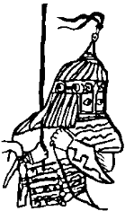

Peki biz ne olacaktık? Bir zamanlar kabağa ok attığım avluda, o ağaç direğin yanında, elimi direğe dayamış duruyordum. Birden neye uğradığımı şaşırdım. Hazar ve Kınık yiğitleri beni aniden yaka paça ettiler. Kendimi bir keçe üstünde buldum. Havaya kaldırıp kaldırıp indirdiler. Bütün kermen gür seslerle çınladı: “Tengere Kağan! Tengere Kağan!” Hoppacık yapılırken gözlerim Selcük’ü yakaladı. Arsılan’ın elinden tutmuş, mutluluk gözyaşları döküyordu. Sonra bu deli yiğitler boğazıma bir kement attılar. Var güçleriyle sıktılar. Kuşça canım az daha Uçmak’a kanat kırıyordu. Sordular:
“Kağan kaç yıl kağanlık edeceksin?”
Hiç! Kağanlık etmek istemiyordum. Sustum. Daha güçlü sıktılar. Dizlerimin üstüne çöktüm. Yine sordular:
“Kağan kaç yıl kağanlık edeceksin?” Konuşamıyordum. Parmaklarımı ağıp, avuçlarımla görünmez bir şeyi iter gibi iki kez,
“Yoo, yoo! Kağanlık etmek istemiyorum! Aman kalsın!” işareti yaptım. Hazar’ın ve Kınık’ın sayı bilen kocaları saydı, hesapladı.
“Hımm, yirmi yıl kağanlık, ha? Peki, sözünde durmazsan bittin sen Kağan!” dediler.
Sonra boğazım bir kez daha sıkıldı. Gözlerim karardı. Dizüstü çökmek ne söz, sırtüstü yere yuvarlandım. Arsılan hıçkırarak ağlıyordu. Anasının elinden kurtularak boğazımı sıkan kişilere saldırdı. Küçük bir soluk alabildim. Bütün kermen gülüyordu. Yoksulumu uzaklaştırdılar. Sordular:
“Kağan biz şimdi ne edelim, söyle nereye gidelim?”
Elimle işaret yapmanın ne kadar tehlikeli olduğunu görmüştüm. İnleyerek,
“Bil...bil...mi...yorum...rum” dedim.
Etli, koca kulaklarını ağzımın içine sokmuş Hazar kocası ayağa kalkarken sevinçle haykırdı:
“Urum! Urum! Apa Uruma gidiyoruz!”
Sarkel kermeni binlerce ciğerden çıkan tek bir sesle sarsıldı: “Urum... Urum!”
Böyle oldu. Bildiğim bu! Başım tütsülü değildi ama usum da başımda değildi! Daha sıktılar mı boynumu? Boynumda yağlı kementlerin kanlı izleri! Eliniz kopsun, o nasıl sıkmak kocalar, Tanrı kargasın sizleri! Evet, böyle oldu. İşte dediğim gibi. Tersini bilen söylesin. Şu Sarkel’in taşı toprağı dile gelsin de desin! Ben Köktürk prensi Tengere Tardu Tigin, Sarkel’in yıkıntıları içinde, Aktürklerin ocağında, Hazar’ın bu yanık yıkık bucağında kağan oldum! Her yan savaş ve ölüm kokarken kağan oldum.
Ben mutlu, bay, bayındır bir ülke değil, bir yıkıntı buldum. Altınım, gümüşüm yok idi, ipeğim ibrişimim yok idi! İşim çok, derdim çok idi. İpime neydi? Kuşağıma neydi? Ama de ki Tanrı’nın eli, elime değdi. Mademki önümde Hazar'dan Kınık'tan, Urus’tan yiğitler baş eğdi, benim de içimde kağanlık filizi baş verdi. Demek ki artık gece uyumayacak, gündüz oturmayacaktım! Az budunu çoğaltacak mıydım? Yoksul budunu bay kılacak mıydım? Yemeyip yedirecek, giymeyip giydirecek miydim? Yalıncak görsem donatacak, yıkık görsem onduracak, büyük büyük göçleri konduracak mıydım? Ben Tengere acaba nasıl bir kağan olacaktım?
Tanrı yarlığadığı için, Han Bayındır’ın kösünü döğdürdüğüm için, Han Bayındır’ın yatağına girdiğim için, ağzıma eğilen kocanın kulakları tıkalı olduğu için, özüm kutum paçamdan taştığı için ben sizlere oldum kağan! Bilmiyorum... Albızlar alası, bak bir kez daha “rum” dedim! Nasıl gideceğiz Urum’a?
Urum! Urum! Tanrı’nın buduna söz verdiği yer sen misin? Tanrı’nın ikinci İsrail’i misin? Biz bildiğimiz gibi birincisine gitsek olmaz mı? Nereden çıktın Urum? Urum ile uğraşmak kolay mı? Yok, yok, ne yapacağız Urum’a gidip? Sanki oradakiler kollarını açmış bizi mi bekliyor? Budunu biraz dizde sallamalı, uyutmalı, yolu uzatmalı! Bozkır bizim nemize yetmez! Urum’un yolları git baba bitmez! Düşünüyorum, ben Gökte Olmuş İl Etmiş Tengere Bilge Kağan. Selcük yanımda yatıyor, düzenli soluk alışlarla uyuyor. Bakalım gün doğsun.